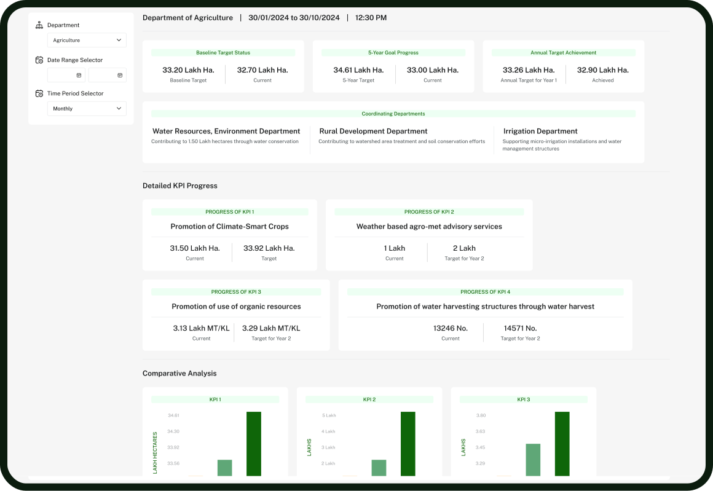
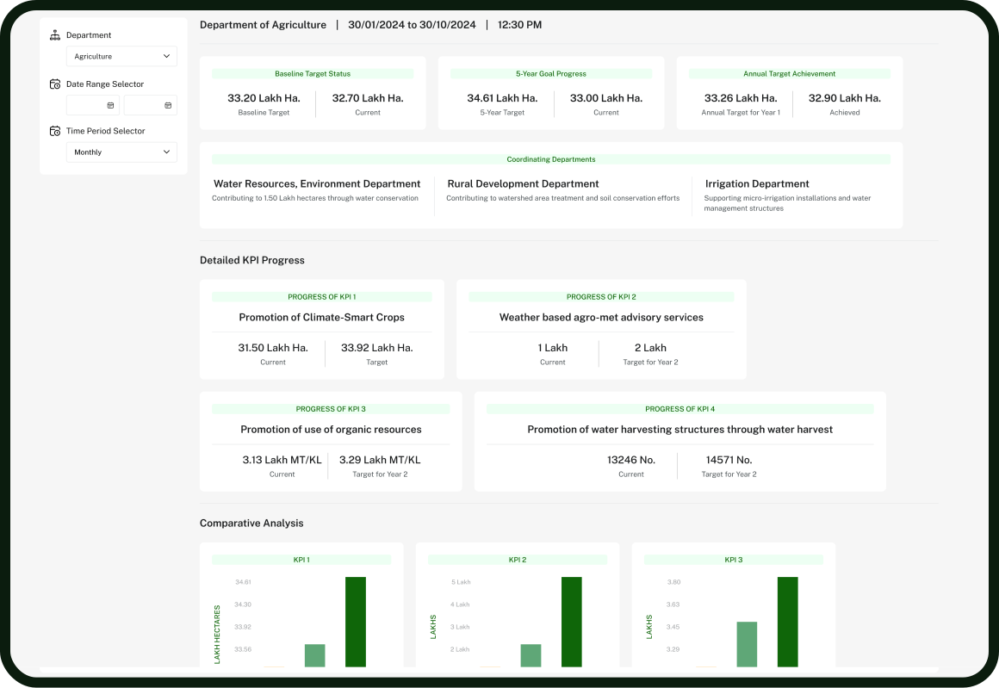

KARNATAKA STATE ACTION PLAN ON CLIMATE CHANGE MONITORING DASHBOARD

The Karnataka State Action Plan on Climate Change (KSAPCC) aims to combat climate challenges through a multi-faceted approach, focusing on the agricultural and water sectors. To ensure the effective implementation of the KSAPCC, real-time monitoring is vital. Our dashboard facilitates transparency and data-driven decision-making by tracking progress, monitoring resources, and fostering inter-departmental coordination.
The Karnataka State Action Plan on Climate Change (KSAPCC) requires robust, real-time monitoring to ensure its objectives are met efficiently. Since 2021, the Centre for Environment Education (CEE), with support from Hanns-Seidel-Stiftung (HSS) India, has studied the effectiveness of KSAPCC implementation. Their findings highlighted the need for a unified system to track progress, identify challenges, and enable real-time decision-making. By 2024, CEE's collaboration with the Karnataka government aims to establish a comprehensive monitoring dashboard that synchronizes data across departments, enhancing transparency and providing an integrated reporting mechanism for climate action.
One of the key pillars of the KSAPCC monitoring project is empowering government officials to manage and utilize the monitoring framework effectively. The initiative involves training district-level officers to handle data collection, monitoring tasks, and progress assessments. This enhanced capacity ensures that local officials can provide accurate updates on climate actions, fostering better inter-departmental coordination and data synchronization across the state. This effort ultimately leads to more informed decision-making, enabling timely adjustments to meet KSAPCC goals.


A unified, web-based government-to-government (G2G) dashboard is being developed to track the real-time progress of the KSAPCC. This system aims to integrate data from various departments and provide centralized reporting, offering a comprehensive view of Karnataka's climate action efforts. The dashboard will facilitate better decision-making, course correction, and provide transparency to the public. By synchronizing departmental efforts and visualizing data in real-time, this tool serves as a game-changer in ensuring the success of climate initiatives.
Engaging citizens in the KSAPCC monitoring process is critical to ensure accountability and transparency. The new monitoring system incorporates a feedback loop that allows citizens to access reports on government progress and submit feedback. This participatory approach ensures that local voices are heard, and their insights are used to make informed decisions on climate-related issues. Citizen engagement not only builds trust but also ensures that the implementation of climate action is aligned with the needs of those affected by it.

Explore the key features that make our KSAPCC Monitoring Dashboard an essential tool in driving climate action. From real-time data insights to citizen engagement, our innovative platform ensures transparent reporting, strategic decision-making, and measurable outcomes for a greener Karnataka.
Provides real-time data for tracking climate action and progress across departments.
Monitors financial allocations and spending for various climate initiatives under KSAPCC.
Tracks key deliverables achieved by departments in climate action efforts.
Measures the long-term impact of initiatives on climate adaptation and resilience.
Enables continuous improvement through real-time data-driven course correction.
Generates tailored reports for stakeholders to analyze progress and make informed decisions.
Allows the public to access reports and view the progress of climate initiatives.
Our KSAPCC Monitoring Dashboard offers real-time insights, transparent reporting, and strategic tools to drive impactful climate action and build a more resilient Karnataka.
 

Our Partnerships and Collaborations


Departments upload their progress data into the centralized dashboard.

The system processes and analyzes data instantly for better insights.

Key performance metrics are displayed through user-friendly graphs and charts.

Reports generated support adjustments and strategic decision-making.